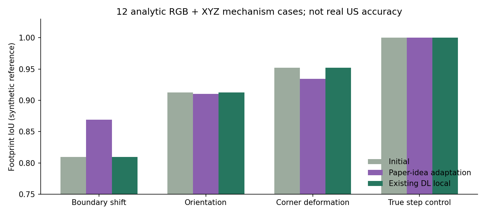

共同初始模型
NAIP RGB、同一批 3DEP 原始索引、已配准足迹与地面参考。每种点集只重建一次，两个修正器拿到同一个模型。
04 / 修正 · 论文核心思想适配 / 2026-10-22
已实现影像线条／角点驱动的渐进几何修正，与现有 DL 观测支持方法配对运行。这里比较后端修正，保留每个未改变、退化和被检查拒绝的结果。
8 栋 × 2 设置原始点／共用筛点，分别配对
48 次论文优化运行：每组 3 个固定种子
12 例解析 RGB＋点云机制检查
读取冻结结果…
这是 Jung & Sohn（2019）的 NAIP 核心思想适配，不是原算法或原论文分数的逐项复现。真实 8 栋没有独立屋顶 GT；能量下降、回波拟合或闭合诊断通过都不证明屋顶更准确。
NAIP RGB、同一批 3DEP 原始索引、已配准足迹与地面参考。每种点集只重建一次，两个修正器拿到同一个模型。
影像线／角点 → 轮廓候选 → 观测拟合＋结构复杂度 → 退火搜索。保留屋面平面参数，调整边界和方向。
冻结点云 MLP → 组件内部观测支持 → 相邻平面重新归属 → 接边。当前局部头不自动判断 RGB 边界，没有新增训练。
“原始点”是主对照；“共用筛点”让两组共同获得已有前处理，检验后端差异。本轮不能据此决定完整前融合／后融合工作流的优劣。NAIP 为 1 m，且与 LiDAR 相差 156 天。
论文组左图紫线／紫点为本次 NAIP 检测线索；“纯影像”可隐藏。三组点云输入成员完全一致。候选未通过边检查时，检查后导出保留共同初始模型。
| 建筑 / 定位 | 共同候选点 | 论文分区变化 m² | 论文边检查 | DL 重归属组件 | DL 边检查 |
|---|
分区变化为各对应屋面 XY 对称差的并集面积，包含内部边界变化；不是误差或改善量。通过边检查仅指 1 mm 容差的关联与方向检查，不等于完整实体认证。
原始回波包含树木和异常值。模型更贴合这些回波也可能更不符合真实屋顶，因此不按该指标判断胜负。种子按既定拟合＋复杂度目标及共同质量检查选择，不读取屋顶真值。
全部诊断与配对输入哈希 JSON ↓每种情形 3 例，两个方法拿到相同影像、点云与受扰动初始屋面。已知解析屋顶只用于生成观测和最后评分，不输入修正器；这些不是实测城市 GT。
| 情形 · 各 3 例 | 初始 IoU ↑ | 论文适配 IoU ↑ | 现有 DL IoU ↑ | 论文边界 Hausdorff m ↓ |
|---|

本次论文适配对部分边界位移有帮助，方向与转角扰动并未稳定改善；当前 DL 局部头主要改平面归属，保持 XY 分区，因而没有在这组边界指标上获得改善。
方法来源：Jung & Sohn，A line-based progressive refinement…（2019）。本次实施了影像线索驱动的候选生成、拟合与规则性平衡、随机退火搜索三个核心环节。
| 环节 | 本次可执行适配 | 比较时的影响 |
|---|---|---|
| 影像线／角点 | Canny＋概率 Hough、Harris 与角点邻近线方向 | 替换原探测器；保留实际检测线索供目视核对 |
| 影像到三维 | NAIP 地理参考映射 XY，再用共同初始屋面平面计算 Z | 适配正射影像，未使用原文透视相机方程 |
| 拓扑候选 | Q1 线替换；Q2 八方向连接；Q3 有角点依据的连接；共享边同步更新 | 加入有效分区约束并保留庭院，候选不允许跨越 2 m 界限 |
| 目标函数 | 边界点拟合、平面内外一致性＋顶点／方向／角度复杂度 | MDL 式实现，非原文逐项编码和参数 |
| 搜索 | 每例 3 个固定种子、各 900 次退火 Metropolis 提议 | 未复刻原 MCMC 非对称提议概率；不宣称全局最优 |
| 输出 | 保留初始平面参数，优化 XY 分区，再建立垂直连接 | 移动边界也会改变某些位置由哪个平面覆盖；不能自由新增／删除平面 |
所有阈值、版本和种子见配方。工程小样调试后冻结代码；最终真实配对不读取 GT。相同点集复用初始执行，避免重建器的重复运行差异造成伪对照。
现有 DL 组复用已有 ISPRS 点网络与局部修正规则，尚未训练新的结构头；完全遮挡补全、跨时相判断与独立美国精度验证仍待完成。旧的“点云先重建再审查”流程 B 继续保留在历史记录，不作为本次论文算法对照。